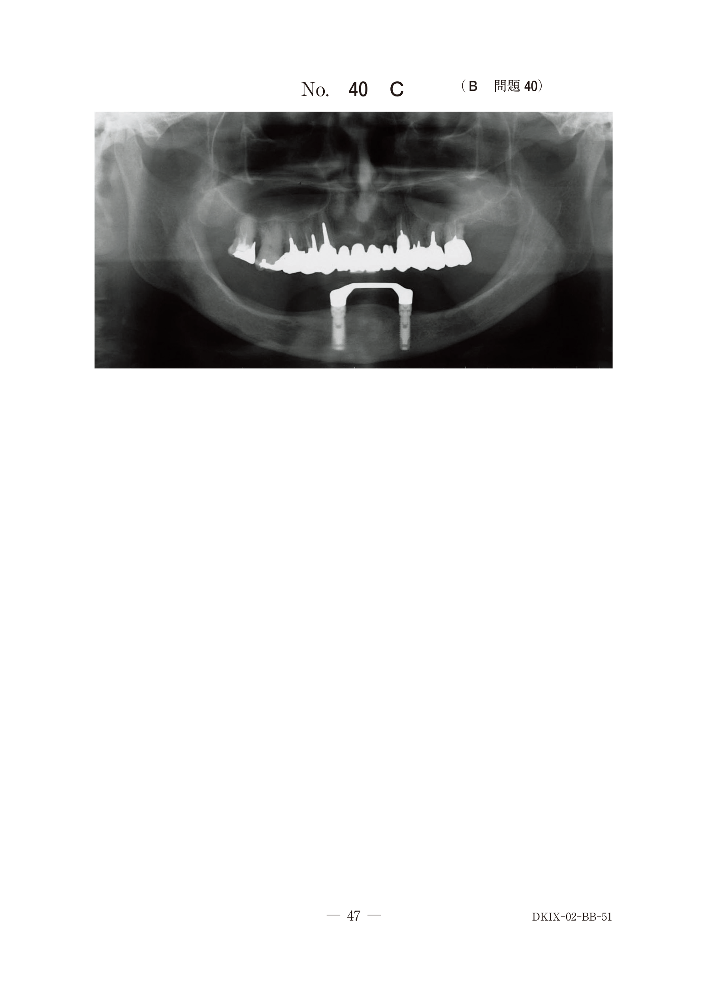
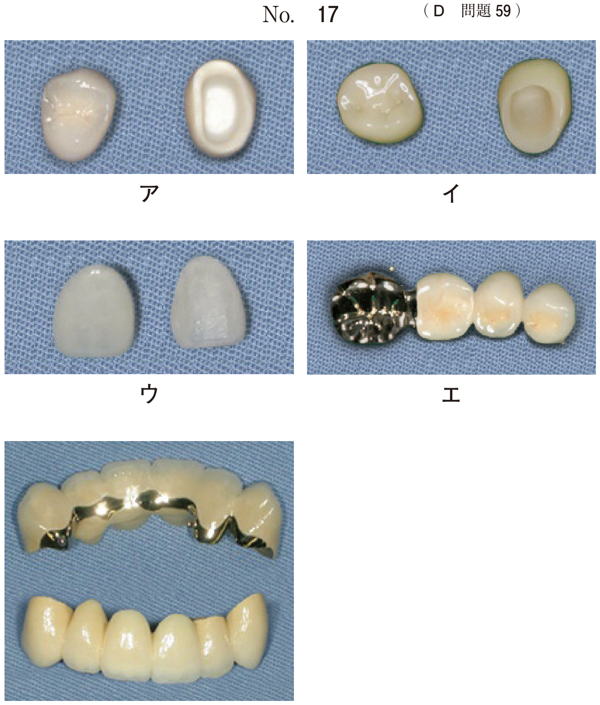
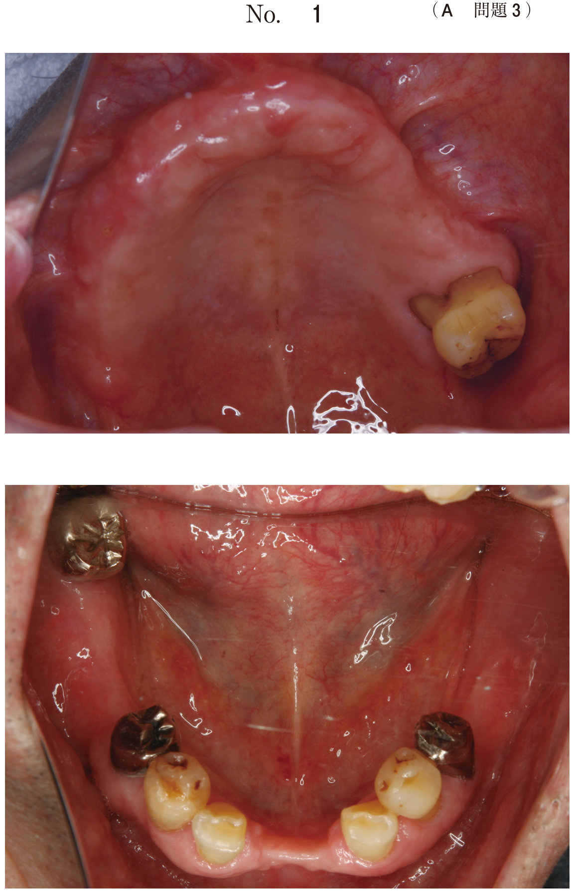

高齢者は複数の基礎疾患を有していることが多く、多種類の薬を服用している場合もある。診療時のリスクが高いため、事前に主治医と対診し、注意事項を十分に把握しておく必要がある。
| 疾患 | 注意事項 |
|---|---|
| 高血圧症 | Ca拮抗薬による歯肉増殖、β遮断薬と局所麻酔薬の相互作用 |
| 慢性心不全 | 抗凝固薬、抗血小板薬による出血傾向 |
| 心房細動 | 抗凝固薬、抗血小板薬による出血傾向 |
| 疾患 | 注意事項 |
|---|---|
| 糖尿病 | 低血糖症状、口腔乾燥症、術後感染症 |
| 骨粗鬆症 | BP製剤・デノスマブ服用者の顎骨壊死（MRONJ） |
| 疾患 | 注意事項 |
|---|---|
| 脳血管障害 | 降圧薬、抗凝固薬、糖尿病薬等の服用薬の確認 |
| 呼吸器疾患 | 感染予防、処方薬の制限（禁忌薬の確認） |
| 神経・筋疾患 | 誤嚥性誤嚥、治療中の血圧変動、誤嚥・誤飲 |
| 精神疾患 | 服薬による口腔乾燥症 |
| 認知症 | 家族との連携 |
60歳以上の約20%が糖尿病を指摘されている。糖尿病は歯周病のリスクファクターであると同時に、歯周病は糖尿病の6番目の合併症である。歯周治療を行うことは血糖値のコントロール改善に影響を与える。
注意：治療中は低血糖や糖尿病性昏睡に注意する。
ビスホスホネート（BP）製剤や抗RANKL抗体（デノスマブ）服用者には顎骨壊死（MRONJ）のリスクがある。歯科治療を行い感染源を除去し、口腔を清潔に保つことが重要。
注意：観血的処置時の対応について明確なガイドラインはなく、常に最新の情報を確認する。
妊娠性歯肉炎は妊娠期に発症する歯肉炎で、ホルモンバランスの変化により歯肉の炎症が起こりやすくなる。
| 薬物 | 薬理効果 | 対象疾患 | 発現率 |
|---|---|---|---|
| フェニトイン | 抗けいれん作用 | てんかん | 50% |
| ニフェジピン | 血管拡張作用 | 高血圧症、狭心症 | 20% |
| シクロスポリンA | 免疫抑制作用 | 臓器移植、自己免疫疾患 | 30% |
① 内科主治医への問い合わせ（薬物変更の可能性）
② 口腔清掃指導（プラークコントロール）
③ スケーリング・ルートプレーニング
④ 再評価
⑤ 必要に応じて歯肉切除術またはフラップ手術
重要：軽度の場合、薬物変更と歯周基本治療で歯肉増殖が消退することがある。
32歳の女性。全顎にわたる歯肉の腫脹を主訴として来院した。7歳時に、てんかんを発症し通院服薬中であるという。歯周ポケットの深さは平均3.5mmで、エックス線検査で骨吸収を認めない。初診時の口腔内写真（別冊No.51）を別に示す。
服用中の薬物とまず行うべき対応との組合せで正しいのはどれか。1つ選べ。

【解説】てんかん患者が服用する抗けいれん薬はフェニトイン。骨吸収がなくポケットも浅いため、まず口腔清掃指導から始める。プラークコントロールで改善しない場合に歯肉切除術を検討する。
60歳の女性。前歯部の歯肉腫脹を主訴として来院した。6か月前に降圧薬を服用してから自覚するようになったが、痛みがないためにそのままにしていたという。プロービングの深さは上下前歯部唇舌口蓋側近遠心で6〜8mm、中央部で4〜5mm、プロービング時には全測定部位で出血を認めた。初診時の口腔内写真（別冊No.27）を別に示す。
まず行うのはどれか。2つ選べ。

【解説】降圧薬（Ca拮抗薬）による薬物性歯肉増殖症。ポケットが深くBOPもあるため、まず口腔清掃指導とSRPを行う。歯肉切除術やフラップ手術は歯周基本治療後の再評価で検討する。
28歳の女性。ブラッシング時の歯肉出血を主訴として来院した。妊娠9か月だという。歯周組織検査の結果、ポケット深さは全顎的に3mm以下であった。まず、ブラッシング指導を行った。初診時の口腔内写真（別冊No.5）を別に示す。
次に行う対応はどれか。1つ選べ。

【解説】妊娠性歯肉炎。ポケットが3mm以下と浅いため、ブラッシング指導後はスケーリングを行う。酸性NSAIDsは妊婦に禁忌（動脈管早期閉鎖のリスク）。